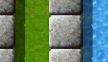

Level of the MonthStarting with today, we want to take a closer look at excellent levels each month. Excellent levels are those with the highest average user ratings and many ratings altogether. Thus it is your vote. So please rate those levels you play and do not forget to submit your ratings together with your scores at the end of each month. March 2007: “Island Labyrinth” by Jacob Scott Any association with this stylistic combination? Most gamers who got to pack V would have unhesitatingly said: This is from “Island Labyrinth”! And it was equally easy to collect some statements from our fellow gamers to it, which you can read below -- so, what makes this level so prominent? Based on your votes from February, Jacob Scott's excellent level got an overwhelmingly positive rating of three flashing 10s and one appreciative 7, averaging to 9.25. No other level with more than a single vote attracted more user sympathy. Thus “Island Labyrinth” took the cake for this month. “It's a level that makes the reality disappear”“Island Labyrinth”, is one of my favorites. It's like 20 levels in one. Joined and interconnected in a seamless way. The perfect mix of logic, ability and timing. Time is not as important as how many lives do you have in your inventory when you finish. It's a level that makes the reality disappear. You are inside this world and the time doesn't exist. I really enjoy this kind of experience and many levels in Enigma and Oxyd make me feel this way, Island Labyrinth is one of them. 
Enigma V # 100
This level cannot be solved on the fly. It takes some time due to its sheer size. But looking at the statistics of this level I noticed a noteworthy peculiarity: As of February's scores, Stupid holds the world record for “Island Labyrinth” with 37:42. Head-to-head with Stupid, Ronald holds second best time with 37:55; only 13 seconds (0.6 percent!) behind Stupid. Ale reached the goal in 54:00, and Taztunes is fourth with another reasonable score of 56:53. 13 seconds difference at over 37 minutes? I guess no one has yet played this level with strong worldrecord ambitions. It would really be a pity to rush through this wonderful level. “Island Labyrinth” is a level with really nice puzzles embedded in a huge labyrinth. Even if you do not like water in others levels you will like it here as it helps you to get familar with the labyrinth. You need to get an overview of it for more purposes than finding the matching oxyds. All over it is a fair level without extreme dexterity parts or hidden stuff that you have to look for. I remember that I ran into trouble with at least three parts of the level on my first attempt to solve it. But each part can be solved by thinking and by small experiments with objects you may not be familar with. For me this level expresses what I call the true spirit of Enigma. Thanks and congratulations to Jacob. Ronald also recommends three levels, if you need some warm-ups for “Island Labyrinth”: “Reach the Dock” (V/38), “Boulder-Puzzle” (IV/8) and “Puppet” (II/42). They all train some abilities that might become useful in “Island Labyrinth”. Additionally, Jacob pointed at “Rush Hour Traffic” and “Labyrinth of Puzzles”. “There's something visually sumptuous about the calming green grass and aqua water”This is one of my all-time favorite levels of Enigma. I like this feeling of finding myself on a great journey. Little by little, the pieces of the puzzle start to fit together as the marble explores this fascinating landscape. Actions in one place have consequences far away (not unlike in the actual world we live in). This is not a landscape in which you find yourself in a continuous state of fear. There are perils, but you have ample time to prepare yourself to deal with them. And there's something visually sumptuous about the calming green grass and aqua water. The main challenge is keeping track of all the disparate elements. I initially found myself flummoxed in the upper right-hand corner. There are some levels that once I've solved them, I never want to suffer through playing them ever again. Not this one. I have enjoyed coming back to “Island Labyrinth” several times. I want to see more epic levels like this one created. I absolutely agree with Taztunes: One of the most charming characteristics of this level is provided by Jacob's consistent design. As one rushes through the little, light-gray, leafy lanes, one rarely loses sight of the second important theme in this level, water. Jacob used this combination earlier, in “Blocks and Water”, but it got to perfection in “Island Labyrinth”. It is always in the background. There are more design-elements, notably the sand-piles that weave quite well into the island theme, the skull/gradient-combination and the ice in the South, that distract more strongly from the common theme. “Island Labyrinth” was the final level Jacob provided for Enigma 0.92. In the tradition of Oxyd, the final level in a level pack often featured some larger, more involved and more complex level than the preceding - and, with Enigma 1.00, “Island Labyrinth” indeed was assigned to be master level of Pack V. “It […] is probably my hardest reasonably-completable level to date”If one compares “Island Labyrinth” with Jacob's earlier levels, you will find an obvious thematic ancestor in “Labyrinth of Puzzles”. It exhibits the same idea of connecting many smaller puzzles into one big maze, and was Jacob's final level for Enigma 0.81. Here is Jacobs own view on “Island Labyrinth”: As for “Island Labyrinth”, I designed it in the style of the old level 100's from Oxyd -- a large landscape that includes many diverse elements and difficult, but not impossible, puzzles. I had originally tried to do that with “Labyrinth of Puzzles”, but it came out too easy and small (at least in my opinion) and didn't include enough different puzzle types. For “Island Labyrinth” I put in most of the puzzles that would fit well with the theme of the level (blocks and water, lasers, dense blocks) in a much larger and better-designed maze. I also managed to include some more atypical puzzles and features, my favorite being the unexpected (but not at all hidden) way to activate one of the oxyds. As a whole it came out reasonably well, I believe -- it can be solved (by me at least) in about 24 minutes, and is non-sequential so a player doesn't have to start over and complete the entire rest of the level again if he/she makes a mistake near the end -- the player can solve that part first next time. It still isn't as hard as some of the old level 100's and is built in a different style, but is probably my hardest reasonably-completable level to date. And, at least from the ratings, it appears to be well enjoyed by the Enigma community, which is the most important thing. Good luck solving, and have fun! Well, all that remains for me is to join in with Jacob: Good luck solving, and have fun with this very worthy level of the month! Oh, and don't forget to rate! Greets, Addendum: Shoki send us a special piece of gamer's art, a full map of “Island Labyrinth”! You find it here, many thanks to Shoki for this! (Note the map is a spoiler.) |

{kind=link}